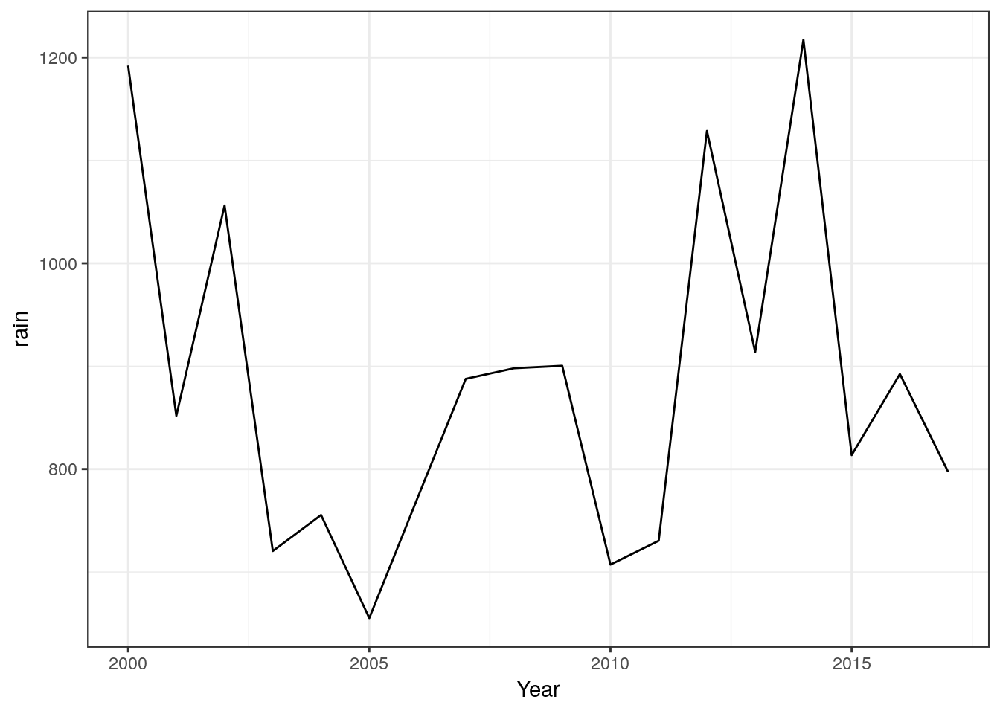
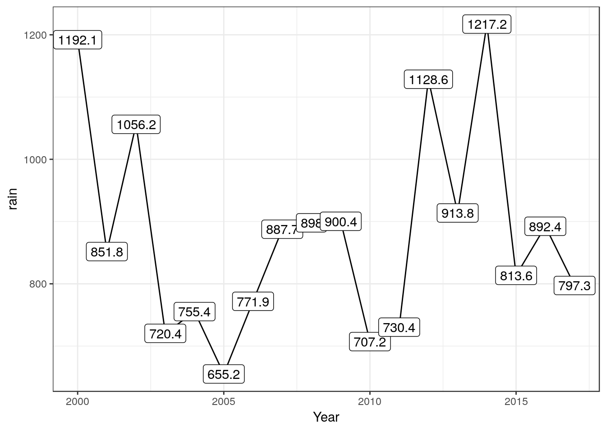
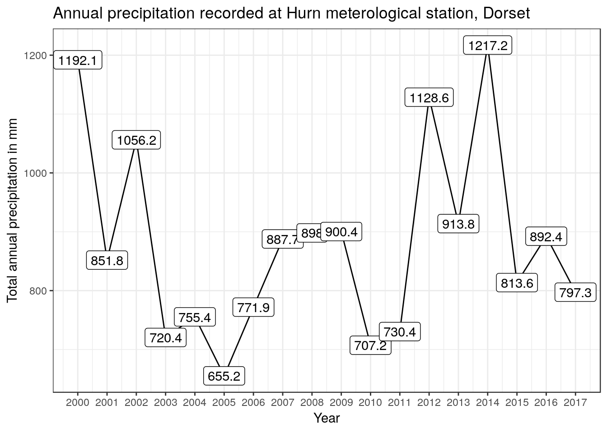
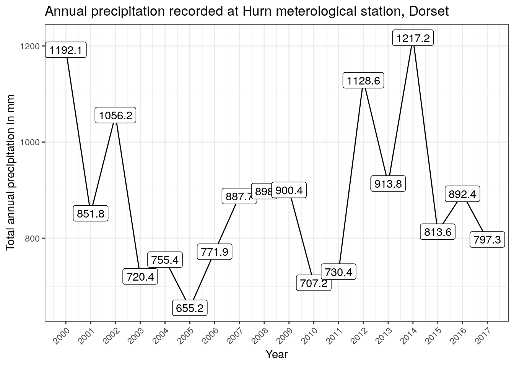
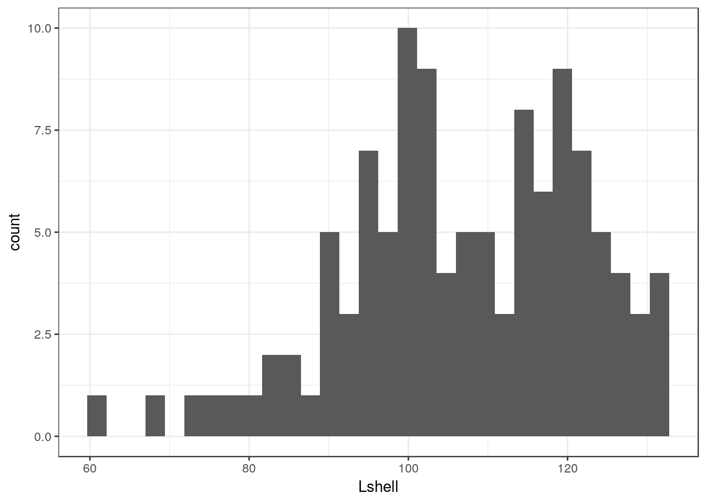
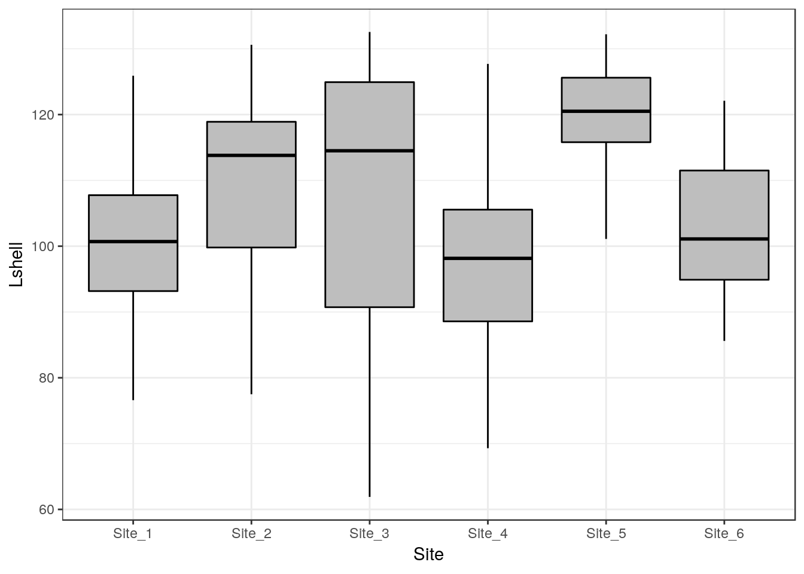
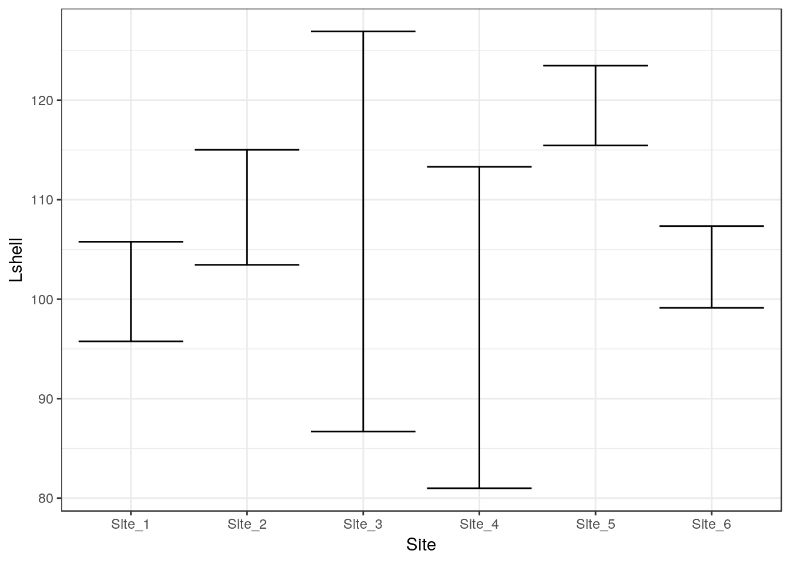
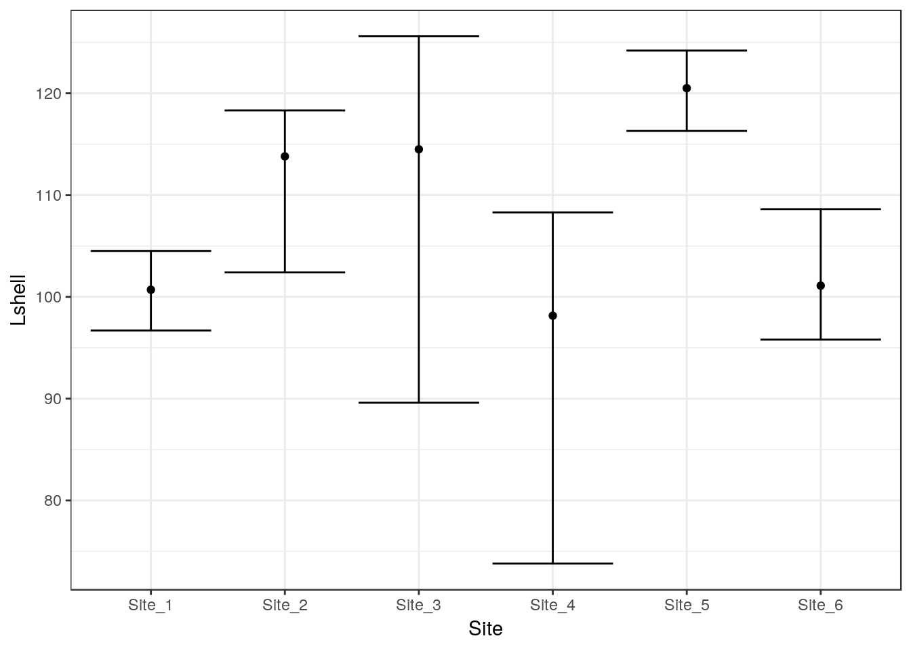
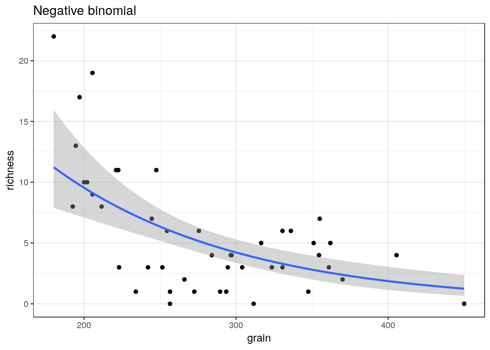
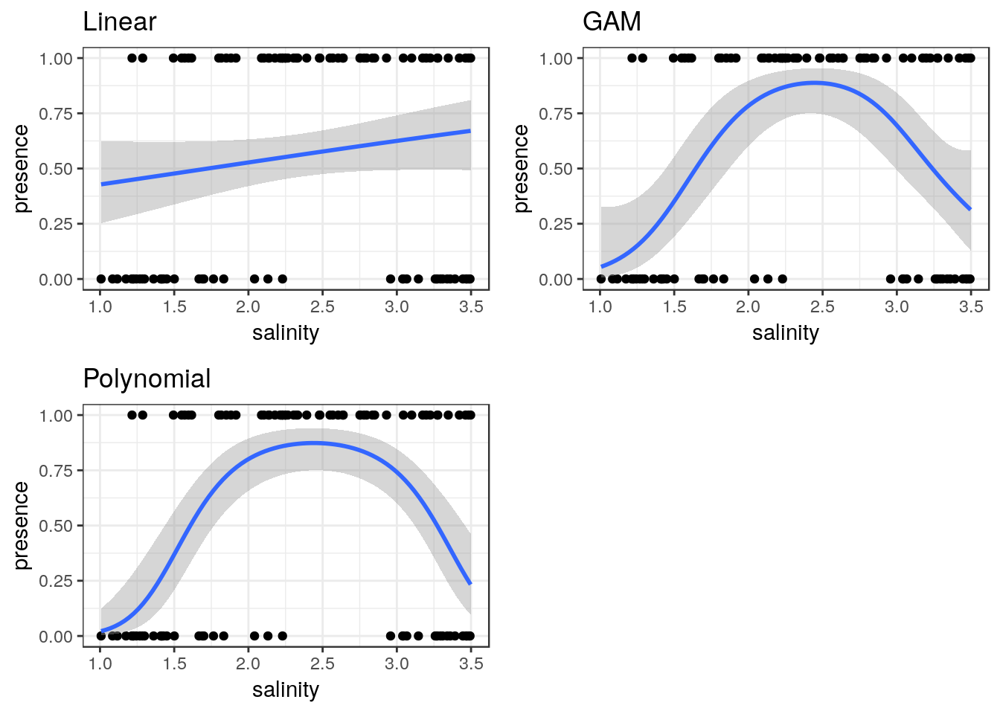

Chapter 10 Line charts
Do not confuse genuine line charts with scatterplots with a fitted line. Line charts are usually non inferential figures (i.e. they do not show confidence intervals). A common use for a line chart is to show a time series.
We’ll extract a portion of data on rainfall from a larger data set. The code below produces a small data frame of annual rainfall measured at the Hurn meteorological station.
data("met_office")
met_office %>% filter(station=="hurn" & Year < 2018 & Year > 1999) %>% group_by(Year) %>% summarise(rain=sum(rain))-> rain
dt(rain)We’ll set up the aesthetics. The x axis is the year, the rainfall goes on the y axis. We might want to use the number as a label.
g0<-ggplot(rain, aes(x=Year,y=rain,label=rain))Now, adding geom_line produces a basic line chart.
g1 <- g0 + geom_line()
g1
This might look better if the actual numbers are shown. This only works for short time series with few values. If there are more values the plot would look too cluttered.
g1 <- g1 + geom_label()
g1
Now we might want to add a title and some text for the x and y axes.
g1<- g1 + labs(title = "Annual precipitation recorded at Hurn meterological station, Dorset", x="Year", y="Total annual precipitation in mm")
g1
This looks better, but its a bit difficult to see which year the number applies to. We can set the breaks on the continyuos x axis with scale_x_continuous(breaks = )
g1 <-g1 + scale_x_continuous(breaks=1999:2018)
g1
A final touch might be to rotate the text on xaxis.
g1 <- g1 + theme(axis.text.x=element_text(angle=45, hjust=1))
g1
10.1 Histograms
Typical histograms use only one variable at a time, although they may be “conditioned” by some grouping variable. The aim of a histogram is to show the distribution of the variable clearly. Let’s try ggplot histograms in ggplot2 using some simple data on mussel shell length at six sites.
data(mussels)
d<-musselsTo produce a simple histogram we only need to provide ggplot2 with the name of the variable we are going to use as the x aesthetic.
g0 <- ggplot(data=d,aes(x=Lshell))10.2 Default histogram
The default geom for the histogram is very simple. The goemetry is associated with statistical function that forms a histogram by counting the number of observation falling into the bins.
g0 + geom_histogram()## `stat_bin()` using `bins = 30`. Pick better value with `binwidth`.
There are several things to notice here. One is that the default histogram looks rather like some of the figures in Excel. For some purposes this can be useful. However you may prefer to change this. This is easy to change. You are also warned that the default binwidth may not be ideal.
My own default settings for a histogram would therefore look more like this.
g1<-g0 +geom_histogram(fill="grey",colour="black",binwidth=10) + theme_bw()
g1
This should be self explanatory. The colour refers to the lines. It is usually a good idea to set the binwidth manually anyway. Notice that this time I have assigned the results to another object. We can then work with this to produce conditional histograms.
You can set the theme to black and white for all subsequent plots with a command.
theme_set(theme_bw())10.3 Facet wrapping
Conditioning the data on one grouping variable is very simple using a facet_wrap. Facets are the term used in ggplots for the panels in a lattice plot. There are two facet functions. Facet_wrap simply wraps a one dimensional set of panels into what should be a convenient number of columns and rows. You can set the number of columns and rows if the results are not as you want.
g_sites<-g1+facet_wrap(~Site)
g_sites
10.4 Boxplots
A grouped boxplot uses the grouping variable on the x axis. So we need to change the aesthetic mapping to reflect this.
data("mussels")
d<-mussels
library(plotly)
g0 <- ggplot(d,aes(x=Site,y=Lshell))
g_box<-g0 + geom_boxplot(fill="grey",colour="black")+theme_bw()
g_box
You should be able to work out that sets of boxplots could be conditioned on a third variable using faceting.
10.5 Conditioning on two variables
Species<-as.factor(rep(c("Sp_1","Sp_2"),each=20))
Site<-rep(c("Site_1","Site_2"),times=20)
resp<-rnorm(40,10,4)
d2<-data.frame(Species,resp,Site)
g_box<-ggplot(d2,aes(y=resp,x=Species))+geom_boxplot(fill="grey",colour="black")
g_box
g_box+facet_wrap(~Site)
10.6 Confidence interval plots
One important rule that you should try to follow when presenting data and carrying out any statistical test is to show confidence intervals for key parameters. Remember that boxplots show the actual data. Parameters extracted from the data are means when the data are grouped by a factor. When two or more numerical variables are combined the parameters refer to the statistical model, as in the case of regression.
Grammar of graphics provides a convenient way of adding statistical summaries to the figures. We can show the position of the mean mussel shell length for each site simply by asking to plot the mean for each y like this.
g0 <- ggplot(d,aes(x=Site,y=Lshell))
g_mean<-g0+stat_summary(fun.y=mean,geom="point")
g_mean## Warning: Computation failed in `stat_summary()`:
## 'what' must be a function or character string
This is not very useful. However you can add confidence intervals themselves by a call to a stat_summary. The syntax is slightly involved.
g_mean+stat_summary(fun.data=mean_cl_normal,geom="errorbar")## Warning: Computation failed in `stat_summary()`:
## 'what' must be a function or character string
To save some typing I’ve added a ci function to the aqm package that will add both these geometries to a graphic in one call.
g1<-aqm::ci(g0)
g1
If you want more robust confidence intervals with no assumption of normality of the residulas then you can use bootstrapping. In this case the result should be just about identical, as the errors are approximately normally distributed.
g_mean+stat_summary(fun.data=mean_cl_boot,geom="errorbar")## Warning: Computation failed in `stat_summary()`:
## 'what' must be a function or character string
10.7 Dynamite plots
The traditional “dynamite” plots with a confidence interval over a bar can be formed in the same way.
g0 <- ggplot(d,aes(x=Site,y=Lshell))
g_mean<-g0+stat_summary(fun.y=mean,geom="bar")
g_mean+stat_summary(fun.data=mean_cl_normal,geom="errorbar")## Warning: Computation failed in `stat_summary()`:
## 'what' must be a function or character string
Most statisticians prefer that the means are shown as points rather than bars. You may want to look at the discussion on this provided by Ben Bolker.
10.8 Inference on medians
One way to infer differences between medians is to plot boxplots with notches.
g0 <- ggplot(d,aes(x=Site,y=Lshell))
g_box<-g0 + geom_boxplot(fill="grey",colour="black", notch=TRUE)+theme_bw()
g_box
# Function included in aqm package
# median_cl_boot <- function(x, conf = 0.95) {
# lconf <- (1 - conf)/2
# uconf <- 1 - lconf
# require(boot)
# bmedian <- function(x, ind) median(x[ind])
# bt <- boot(x, bmedian, 1000)
# bb <- boot.ci(bt, type = "perc")
# data.frame(y = median(x), ymin = quantile(bt$t, lconf), ymax = quantile(bt$t,
# uconf))
# }This has been added to the aqm package.
g0+ stat_summary(fun.data = aqm::median_cl_boot, geom = "errorbar") + stat_summary(fun.y = median, geom = "point")
10.9 Scatterplots
Scatterplots can be built up in a similar manner. We first need to define the aesthetics. In this case there are clearly a and y coordinates that need to be mapped to the names of the variables.
g0 <- ggplot(d,aes(x=Lshell,y=BTVolume))
g0+geom_point()
10.10 Adding a regression line
It is very easy to add a regression line with confidence intervals to the plot.
g0+geom_point()+geom_smooth(method = "lm", se = TRUE)
Although the syntax reads “se=TRUE” this refers to 95% confidence intervals.
10.11 Grouping and conditioning
There are various ways of plotting regressions for each site. We could define a colour aesthetic that will automatically group the data and then plot all the lines as one figure.
g0 <- ggplot(d,aes(x=Lshell,y=BTVolume,colour=Site))
g1<-g0+geom_point()+geom_smooth(method = "lm", se = TRUE)
g2<-g1+geom_point(aes(col=factor(Site)))
g2
This can be split into panels using facet wrapping.
g2+facet_wrap(~Site)
10.12 Curvilinear relationships
Many models involving two variables can be visualised using ggplot.
d<-read.csv(system.file("extdata", "marineinverts.csv", package = "aqm"))
str(d)## 'data.frame': 45 obs. of 4 variables:
## $ richness: int 0 2 8 13 17 10 10 9 19 8 ...
## $ grain : num 450 370 192 194 197 ...
## $ height : num 2.255 0.865 1.19 -1.336 -1.334 ...
## $ salinity: num 27.1 27.1 29.6 29.4 29.6 29.4 29.4 29.6 29.6 29.6 ...g0<-ggplot(d,aes(x=grain,y=richness))
g1<-g0+geom_point()+geom_smooth(method="lm", se=TRUE)
g1
g2<-g0+geom_point()+geom_smooth(method="lm",formula=y~x+I(x^2), se=TRUE)
g2
g3<-g0+geom_point()+geom_smooth(method="loess", se=TRUE)
g3
You can also use a gam directly.
g4<-g0+geom_point()+stat_smooth(method = "gam", formula = y ~ s(x))
g4
The plots can be arranged on a single page using the multiplot function taken from a cookbook for R.
multiplot(g1,g2,g3,g4,cols=2)
10.13 Generalised linear models
Ggplots conveniently show the results of prediction from a generalised linear model on the response scale.
glm1<-g0+geom_point()+geom_smooth(method="glm", method.args=list(family="poisson"), se=TRUE) +ggtitle("Poisson")
glm1
glm2<-g0+geom_point()+geom_smooth(method="glm", method.args=list(family="quasipoisson"), se=TRUE) + ggtitle("Quasipoisson")
glm2
library(MASS)##
## Attaching package: 'MASS'## The following object is masked from 'package:plotly':
##
## select## The following object is masked from 'package:dplyr':
##
## selectglm3<-g0+geom_point()+geom_smooth(method="glm.nb", se=TRUE) +ggtitle("Negative binomial")
glm3
multiplot(glm1,glm2,glm3,cols=2)
10.14 Binomial data
The same approach can be taken to binomial data.
ragworm<-read.csv(system.file("extdata", "ragworm_test3.csv", package = "aqm"))
str(ragworm)## 'data.frame': 100 obs. of 2 variables:
## $ presence: int 1 1 0 0 1 1 1 0 1 1 ...
## $ salinity: num 2.55 2.21 3.39 2.96 1.88 ...g0 <- ggplot(ragworm,aes(x=salinity,y=presence))
g1<-g0+geom_point()+stat_smooth(method="glm",formula = y~ x, method.args=list(family="binomial"))+ggtitle("Linear")
g2<-g0+geom_point()+stat_smooth(method="glm",formula = y~ x+I(x^2), method.args=list(family="binomial"))+ggtitle("Polynomial")
g3<-g0+geom_point()+stat_smooth(method = "gam", formula = y ~ s(x), method.args=list(family="binomial"))+ggtitle("GAM")
multiplot(g1,g2,g3,cols=2)